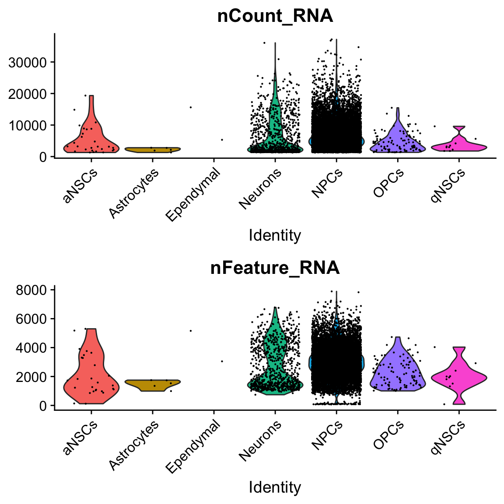
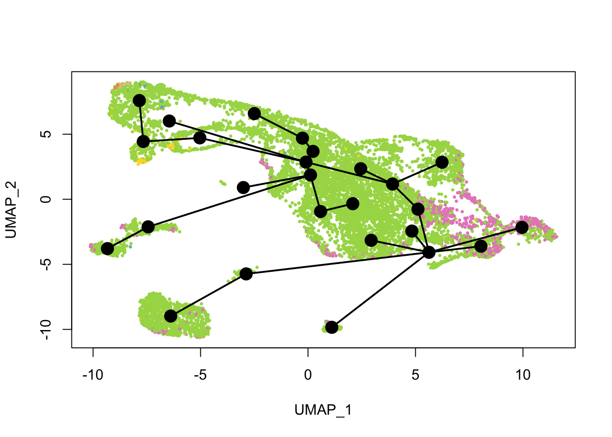

Pseudotime analysis with slingshot
Lambda Moses
2019-07-24
Last updated: 2019-07-24
Checks: 7 0
Knit directory: BUS_notebooks_R/
This reproducible R Markdown analysis was created with workflowr (version 1.4.0). The Checks tab describes the reproducibility checks that were applied when the results were created. The Past versions tab lists the development history.
Great! Since the R Markdown file has been committed to the Git repository, you know the exact version of the code that produced these results.
Great job! The global environment was empty. Objects defined in the global environment can affect the analysis in your R Markdown file in unknown ways. For reproduciblity it’s best to always run the code in an empty environment.
The command set.seed(20181214) was run prior to running the code in the R Markdown file. Setting a seed ensures that any results that rely on randomness, e.g. subsampling or permutations, are reproducible.
Great job! Recording the operating system, R version, and package versions is critical for reproducibility.
Nice! There were no cached chunks for this analysis, so you can be confident that you successfully produced the results during this run.
Great job! Using relative paths to the files within your workflowr project makes it easier to run your code on other machines.
Great! You are using Git for version control. Tracking code development and connecting the code version to the results is critical for reproducibility. The version displayed above was the version of the Git repository at the time these results were generated.
Note that you need to be careful to ensure that all relevant files for the analysis have been committed to Git prior to generating the results (you can use wflow_publish or wflow_git_commit). workflowr only checks the R Markdown file, but you know if there are other scripts or data files that it depends on. Below is the status of the Git repository when the results were generated:
Ignored files:
Ignored: .Rhistory
Ignored: .Rproj.user/
Ignored: BUS_notebooks_R.Rproj
Ignored: analysis/figure/
Ignored: data/whitelist_v3.txt.gz
Ignored: output/out_pbmc1k/
Untracked files:
Untracked: ensembl/
Untracked: output/neuron10k/
Unstaged changes:
Modified: analysis/index.Rmd
Note that any generated files, e.g. HTML, png, CSS, etc., are not included in this status report because it is ok for generated content to have uncommitted changes.
These are the previous versions of the R Markdown and HTML files. If you’ve configured a remote Git repository (see ?wflow_git_remote), click on the hyperlinks in the table below to view them.
| File | Version | Author | Date | Message |
|---|---|---|---|---|
| Rmd | 5e16aa3 | Lambda Moses | 2019-07-24 | slingshot notebook |
Introduction
This notebook does pseudotime analysis of the 10x 10k neurons from an E18 mouse with slingshot, which is on Bioconductor. Like Monocle 2 DDRTree, slingshot builds a minimum spanning tree, but while Monocle 2 builds the tree from individual cells, slingshot does so with clusters. slingshot is also the top rated trajectory inference method in the dynverse paper.
In the kallisto | bustools paper, I used the docker container for slingshot provided by dynverse for pseudotime analysis, because dynverse provides unified interface to dozens of different trajectory inference (TI) methods via docker containers, making it easy to try other methods without worrying about installing dependencies. Furthermore, dynverse provides metrics to evaluate TI methods. However, the docker images provided by dynverse do not provide users with the full range of options available from the TI methods themselves. For instance, while any dimension reduction and any kind of clustering can be used for slingshot, dynverse chose PCA and partition around medoids (PAM) clustering for us (see the source code here). So in this notebook, we will directly use slingshot rather than via dynverse.
The gene count matrix of the 10k neuron dataset has already been generated with the kallisto | bustools pipeline and filtered for the Monocle 2 notebook. Cell types have also been annotated with SingleR in that notebook. Please refer to the first 3 main sections of that notebook for instructions on how to use kallisto | bustools, remove empty droplets, and annotate cell types.
Packages slingshot, biomaRt and SingleCellExperiment are from Bioconductor. BUSpaRse is on GitHub. The other packages are on CRAN.
library(slingshot)
library(biomaRt)
library(BUSpaRse)
library(tidyverse)
library(tidymodels)
library(Seurat)
library(scales)
library(viridis)Loading the matrix
The filtered gene count matrix and the cell annotation were saved from the Monocle 2 notebook.
annot <- readRDS("./output/neuron10k/cell_types.rds")
mat_filtered <- readRDS("./output/neuron10k/mat_filtered.rds")Just to show the structures of those 2 objects:
dim(mat_filtered)#> [1] 23342 11031class(mat_filtered)#> [1] "dgCMatrix"
#> attr(,"package")
#> [1] "Matrix"Row names are Ensembl gene IDs.
head(rownames(mat_filtered))#> [1] "ENSMUSG00000094619.2" "ENSMUSG00000095646.1" "ENSMUSG00000073406.10"
#> [4] "ENSMUSG00000079491.9" "ENSMUSG00000046808.17" "ENSMUSG00000092300.7"head(colnames(mat_filtered))#> [1] "AAACCCACACGCGGTT" "AAACCCACAGCATACT" "AAACCCACATACCATG"
#> [4] "AAACCCAGTCGCACAC" "AAACCCAGTGCACATT" "AAACCCAGTGGTAATA"str(annot)#> List of 10
#> $ scores : num [1:11031, 1:28] 0.188 0.192 0.183 0.265 0.186 ...
#> ..- attr(*, "dimnames")=List of 2
#> .. ..$ : chr [1:11031] "AAACCCACACGCGGTT" "AAACCCACAGCATACT" "AAACCCACATACCATG" "AAACCCAGTCGCACAC" ...
#> .. ..$ : chr [1:28] "Adipocytes" "aNSCs" "Astrocytes" "Astrocytes activated" ...
#> $ labels : chr [1:11031, 1] "NPCs" "NPCs" "NPCs" "NPCs" ...
#> ..- attr(*, "dimnames")=List of 2
#> .. ..$ : chr [1, 1:11031] "AAACCCACACGCGGTT" "AAACCCACAGCATACT" "AAACCCACATACCATG" "AAACCCAGTCGCACAC" ...
#> .. ..$ : NULL
#> $ r : num [1:11031, 1:358] 0.186 0.195 0.18 0.25 0.17 ...
#> ..- attr(*, "dimnames")=List of 2
#> .. ..$ : chr [1:11031] "AAACCCACACGCGGTT" "AAACCCACAGCATACT" "AAACCCACATACCATG" "AAACCCAGTCGCACAC" ...
#> .. ..$ : chr [1:358] "ERR525589Aligned" "ERR525592Aligned" "SRR275532Aligned" "SRR275534Aligned" ...
#> $ pval : Named num [1:11031] 0.0396 0.0582 0.0366 0.0107 0.0329 ...
#> ..- attr(*, "names")= chr [1:11031] "AAACCCACACGCGGTT" "AAACCCACAGCATACT" "AAACCCACATACCATG" "AAACCCAGTCGCACAC" ...
#> $ labels1 : chr [1:11031, 1] "NPCs" "NPCs" "NPCs" "NPCs" ...
#> ..- attr(*, "dimnames")=List of 2
#> .. ..$ : chr [1:11031] "AAACCCACACGCGGTT" "AAACCCACAGCATACT" "AAACCCACATACCATG" "AAACCCAGTCGCACAC" ...
#> .. ..$ : NULL
#> $ labels1.thres: chr [1:11031] "NPCs" "X" "NPCs" "NPCs" ...
#> $ cell.names : chr [1:11031] "AAACCCACACGCGGTT" "AAACCCACAGCATACT" "AAACCCACATACCATG" "AAACCCAGTCGCACAC" ...
#> $ quantile.use : num 0.8
#> $ types : chr [1:358] "Adipocytes" "Adipocytes" "Adipocytes" "Adipocytes" ...
#> $ method : chr "single"To prevent endothelial cells, erythrocytes, immune cells, and fibroblasts from being mistaken as very differentiated cell types derived from neural stem cells, we will only keep cells with a label for the neural or glial lineage. This can be a problem as slingshot does not support multiple disconnected trajectories.
ind <- annot$labels %in% c("NPCs", "Neurons", "OPCs", "Oligodendrocytes",
"qNSCs", "aNSCs", "Astrocytes", "Ependymal")
cells_use <- annot$cell.names[ind]
mat_filtered <- mat_filtered[, cells_use]Meaning of the acronyms:
- NPCs: Neural progenitor cells
- OPCs: Oligodendrocyte progenitor cells
- qNSCs: Quiescent neural stem cells
- aNSCs: Active neural stem cells
Since we will do differential expression and gene symbols are more human readable than Ensembl gene IDs, we will get the corresponding gene symbols from Ensembl.
gns <- tr2g_ensembl(species = "Mus musculus", use_gene_name = TRUE,
ensembl_version = 94)[,c("gene", "gene_name")] %>%
distinct()#> Querying biomart for transcript and gene IDs of Mus musculus#> Cache foundPreprocessing
QC
seu <- CreateSeuratObject(mat_filtered) %>%
SCTransform() # normalize and scale
# Add cell type annotation to metadata
seu <- AddMetaData(seu, setNames(annot$labels[ind], cells_use),
col.name = "cell_type")VlnPlot(seu, c("nCount_RNA", "nFeature_RNA"), pt.size = 0.1, ncol = 1, group.by = "cell_type")
There is only one cell labeled ependymal.
ggplot(seu@meta.data, aes(nCount_RNA, nFeature_RNA, color = cell_type)) +
geom_point(size = 0.5) +
scale_color_brewer(type = "qual", palette = "Set2", name = "cell type") +
scale_x_log10() +
scale_y_log10() +
theme_bw() +
# Make points larger in legend
guides(color = guide_legend(override.aes = list(size = 3))) +
labs(x = "Total UMI counts", y = "Number of genes detected")Dimension reduction
seu <- RunPCA(seu, npcs = 70, verbose = FALSE)
ElbowPlot(seu, ndims = 70)
The y axis is standard deviation (not variance), or the singular values from singular value decomposition on the data performed for PCA.
PCAPlot(seu, group.by = "cell_type", pt.size = 0.5, label = TRUE, repel = TRUE) +
scale_color_brewer(type = "qual", palette = "Set2")seu <- RunTSNE(seu, dims = 1:50, verbose = FALSE)
TSNEPlot(seu, group.by = "cell_type", pt.size = 0.5, label = TRUE, repel = TRUE) +
scale_color_brewer(type = "qual", palette = "Set2")UMAP can better preserve pairwise distance of cells than tSNE and can better separate cell populations than the first 2 PCs of PCA (Becht et al. 2018), so the TI will be done on UMAP rather than tSNE or PCA.
seu <- RunUMAP(seu, dims = 1:50)
UMAPPlot(seu, group.by = "cell_type", pt.size = 0.5, label = TRUE, repel = TRUE) +
scale_color_brewer(type = "qual", palette = "Set2")Cell type annotation with SingleR requires a reference with bulk RNA seq data for isolated known cell types. The reference used for cell type annotation here does not differentiate between different types of neural progenitor cells; clustering can further partition the neural progenitor cells. Furthermore, slingshot is based on cluster-wise minimum spanning tree, so finding a good clustering is important to good trajectory inference with slingshot. The clustering algorithm used here is Leiden, which is an improvement over the commonly used Louvain; Leiden communities are guaranteed to be well-connected, while Louvain can lead to poorly connected communities.
seu <- FindNeighbors(seu, verbose = FALSE) %>%
FindClusters(algorithm = 4, resolution = 1) # Leiden clustering
UMAPPlot(seu, pt.size = 0.5)Slingshot
Trajectory inference
While the slingshot vignette uses SingleCellExperiment, slingshot can also take a matrix of cell embeddings in reduced dimension as input. We can optionally specify the cluster to start or end the trajectory based on biological knowledge. Here, since quiescent neural stem cells are in cluster 10, the starting cluster would be 10 near the bottom left of the previous plot.
sds <- slingshot(Embeddings(seu, "umap"), clusterLabels = seu$seurat_clusters,
start.clus = "10")Unfortunately, slingshot does not natively support ggplot2. So this is a function that assigns colors to each cell in base R graphics.
#' Assign a color to each cell based on some value
#'
#' @param cell_vars Vector indicating the value of a variable associated with cells.
#' @param pal_fun Palette function that returns a vector of hex colors, whose
#' argument is the length of such a vector.
#' @param ... Extra arguments for pal_fun.
#' @return A vector of hex colors with one entry for each cell.
cell_pal <- function(cell_vars, pal_fun,...) {
if (is.numeric(cell_vars)) {
pal <- pal_fun(100, ...)
return(pal[cut(cell_vars, breaks = 100)])
} else {
categories <- sort(unique(cell_vars))
pal <- setNames(pal_fun(length(categories), ...), categories)
return(pal[cell_vars])
}
}We need color palettes for both cell types and Leiden clusters. These would be the same colors seen in the Seurat plots.
cell_colors <- cell_pal(seu$cell_type, brewer_pal("qual", "Set2"))
cell_colors_clust <- cell_pal(seu$SCT_snn_res.1, hue_pal())What does the inferred trajectory look like compared to cell types?
plot(reducedDim(sds), col = cell_colors, pch = 16, cex = 0.5)
lines(sds, lwd = 2, type = 'lineages', col = 'black')
Again, the qNSCs are the brown points near the bottom left, NPCs are green, and neurons are pink. It seems that multiple neural lineages formed. This is a much more complicated picture than the two branches of neurons projected on the first two PCs in the pseudotime figure in the kallisto | bustools paper (Supplementary Figure 6.5). It also seems that slingshot did not pick up the glial lineage (oligodendrocytes and astrocytes), as the vast majority of cells here are NPCs or neurons.
See how this looks with Leiden clusters.
plot(reducedDim(sds), col = cell_colors_clust, pch = 16, cex = 0.5)
lines(sds, lwd = 2, type = 'lineages', col = 'black')
Here slingshot thinks that cluster 3 is a point where multiple neural lineages diverge.
Principal curves are smoothed representations of each lineage; pseudotime values are computed by projecting the cells onto the principal curves. What do the principal curves look like?
plot(reducedDim(sds), col = cell_colors, pch = 16, cex = 0.5)
lines(sds, lwd = 2, col = 'black')
Which cells are in which lineage? Here we plot the pseudotime values for each lineage.
nc <- 2
pt <- slingPseudotime(sds)
nms <- colnames(pt)
nr <- ceiling(length(nms)/nc)
pal <- viridis(100, end = 0.95)
par(mfrow = c(nr, nc))
for (i in nms) {
colors <- pal[cut(pt[,i], breaks = 100)]
plot(reducedDim(sds), col = colors, pch = 16, cex = 0.5, main = i)
lines(sds, lwd = 2, col = 'black', type = 'lineages')
}
I still wonder if lineages 1 and 6 are real. Monocle 3 would have assigned disconnected trajectories to the separate clusters in lineages 1 and 6, but those clusters have been labeled NPCs or neurons, which must have come from neural stem cells. Perhaps they are so differentiated that it would make sense to consider them separately from the main lineage as Monocle 3 does.
Differential expression
Let’s look at which genes are differentially expressed along one of the 6 lineages. In dynverse, feature (gene) importance is calculated by using gene expression to predict pseudotime value with random forest and finding genes that contribute the most to the accuracy of the response. Since it’s really not straightforward to convert existing pseudotime results to dynverse format, it would be easier to build a random forest model. Variable importance will be calculated for the top 100 highly variable genes here, with tidymodels.
# Get top highly variable genes
top_hvg <- HVFInfo(seu) %>%
mutate(., bc = rownames(.)) %>%
arrange(desc(residual_variance)) %>%
top_n(100, residual_variance) %>%
pull(bc)
# Prepare data for random forest
dat_use <- t(GetAssayData(seu, slot = "scale.data")[top_hvg,])
dat_use_df <- cbind(slingPseudotime(sds)[,5], dat_use)
colnames(dat_use_df)[1] <- "pseudotime5"
dat_use_df <- as.data.frame(dat_use_df[!is.na(dat_use_df[,1]),])The subset of data is randomly split into training and validation; the model fitted on the training set will be evaluated on the validation set.
dat_split <- initial_split(dat_use_df)
dat_train <- training(dat_split)
dat_val <- testing(dat_split)tidymodels is a unified interface to different machine learning models, a “tidier” version of caret. The code chunk below can easily be adjusted to use other random forest packages as the back end, so no need to learn new syntax for those packages.
model <- rand_forest(mtry = 40, trees = 1000, min_n = 15) %>%
set_engine("ranger", importance = "impurity", num.threads = 3) %>%
fit(pseudotime5 ~ ., data = dat_train)The model is evaluated on the validation set with 3 metrics: room mean squared error (RMSE), coefficient of determination using correlation (rsq, between 0 and 1), and mean absolute error (MAE).
val_results <- dat_val %>%
mutate(estimate = predict(model, .[,-1]) %>% pull()) %>%
select(truth = pseudotime5, estimate)
metrics(data = val_results, truth, estimate)#> # A tibble: 3 x 3
#> .metric .estimator .estimate
#> <chr> <chr> <dbl>
#> 1 rmse standard 1.59
#> 2 rsq standard 0.944
#> 3 mae standard 0.908RMSE and MAE should have the same unit as the data. As pseudotime values here usually have values much larger than 2, the error isn’t too bad. Correlation (rsq) between slingshot’s pseudotime and random forest’s prediction is very high, also showing good prediction from the top 100 highly variable genes.
summary(dat_use_df$pseudotime5)#> Min. 1st Qu. Median Mean 3rd Qu. Max.
#> 0.000 8.814 14.519 14.069 18.427 26.777Now it’s time to plot some genes deemed the most important to predicting pseudotime:
var_imp <- sort(model$fit$variable.importance, decreasing = TRUE)
top_genes <- names(var_imp)[1:6]
# Convert to gene symbol
top_gene_name <- gns$gene_name[match(top_genes, gns$gene)]par(mfrow = c(nr, nc))
for (i in seq_along(top_genes)) {
colors <- pal[cut(dat_use[,top_genes[i]], breaks = 100)]
plot(reducedDim(sds), col = colors, pch = 16, cex = 0.5, main = top_gene_name[i])
lines(sds, lwd = 2, col = 'black', type = 'lineages')
}These genes do highlight different parts of the trajectory. A quick search on PubMed did show relevance of these genes to development of the central nervous system in mice.
sessionInfo()#> R version 3.6.1 (2019-07-05)
#> Platform: x86_64-apple-darwin15.6.0 (64-bit)
#> Running under: macOS Mojave 10.14.5
#>
#> Matrix products: default
#> BLAS: /Library/Frameworks/R.framework/Versions/3.6/Resources/lib/libRblas.0.dylib
#> LAPACK: /Library/Frameworks/R.framework/Versions/3.6/Resources/lib/libRlapack.dylib
#>
#> locale:
#> [1] en_US.UTF-8/en_US.UTF-8/en_US.UTF-8/C/en_US.UTF-8/en_US.UTF-8
#>
#> attached base packages:
#> [1] stats graphics grDevices utils datasets methods base
#>
#> other attached packages:
#> [1] viridis_0.5.1 viridisLite_0.3.0 Seurat_3.0.2
#> [4] yardstick_0.0.3 rsample_0.0.5 recipes_0.1.6
#> [7] parsnip_0.0.2 infer_0.4.0.1 dials_0.0.2
#> [10] scales_1.0.0 broom_0.5.2 tidymodels_0.0.2
#> [13] forcats_0.4.0 stringr_1.4.0 dplyr_0.8.3
#> [16] purrr_0.3.2 readr_1.3.1 tidyr_0.8.3
#> [19] tibble_2.1.3 ggplot2_3.2.0 tidyverse_1.2.1
#> [22] BUSpaRse_0.99.18 biomaRt_2.41.7 slingshot_1.3.1
#> [25] princurve_2.1.4
#>
#> loaded via a namespace (and not attached):
#> [1] rappdirs_0.3.1 SnowballC_0.6.0
#> [3] rtracklayer_1.45.2 R.methodsS3_1.7.1
#> [5] bit64_0.9-7 knitr_1.23
#> [7] irlba_2.3.3 dygraphs_1.1.1.6
#> [9] DelayedArray_0.11.4 R.utils_2.9.0
#> [11] data.table_1.12.2 rpart_4.1-15
#> [13] inline_0.3.15 RCurl_1.95-4.12
#> [15] AnnotationFilter_1.9.0 generics_0.0.2
#> [17] metap_1.1 BiocGenerics_0.31.5
#> [19] GenomicFeatures_1.37.4 callr_3.3.1
#> [21] cowplot_1.0.0 RSQLite_2.1.2
#> [23] RANN_2.6.1 future_1.14.0
#> [25] bit_1.1-14 tokenizers_0.2.1
#> [27] webshot_0.5.1 xml2_1.2.0
#> [29] lubridate_1.7.4 httpuv_1.5.1
#> [31] StanHeaders_2.18.1-10 SummarizedExperiment_1.15.5
#> [33] assertthat_0.2.1 gower_0.2.1
#> [35] xfun_0.8 hms_0.5.0
#> [37] bayesplot_1.7.0 evaluate_0.14
#> [39] promises_1.0.1 fansi_0.4.0
#> [41] progress_1.2.2 caTools_1.17.1.2
#> [43] dbplyr_1.4.2 readxl_1.3.1
#> [45] igraph_1.2.4.1 DBI_1.0.0
#> [47] htmlwidgets_1.3 stats4_3.6.1
#> [49] crosstalk_1.0.0 backports_1.1.4
#> [51] markdown_1.0 gbRd_0.4-11
#> [53] RcppParallel_4.4.3 vctrs_0.2.0
#> [55] SingleCellExperiment_1.7.0 Biobase_2.45.0
#> [57] ensembldb_2.9.2 ROCR_1.0-7
#> [59] withr_2.1.2 BSgenome_1.53.0
#> [61] sctransform_0.2.0 GenomicAlignments_1.21.4
#> [63] xts_0.11-2 prettyunits_1.0.2
#> [65] cluster_2.1.0 ape_5.3
#> [67] lazyeval_0.2.2 crayon_1.3.4
#> [69] labeling_0.3 pkgconfig_2.0.2
#> [71] GenomeInfoDb_1.21.1 nlme_3.1-140
#> [73] ProtGenerics_1.17.2 nnet_7.3-12
#> [75] rlang_0.4.0 globals_0.12.4
#> [77] miniUI_0.1.1.1 colourpicker_1.0
#> [79] BiocFileCache_1.9.1 rsvd_1.0.1
#> [81] modelr_0.1.4 tidytext_0.2.1
#> [83] cellranger_1.1.0 rprojroot_1.3-2
#> [85] lmtest_0.9-37 matrixStats_0.54.0
#> [87] Matrix_1.2-17 loo_2.1.0
#> [89] boot_1.3-23 zoo_1.8-6
#> [91] base64enc_0.1-3 whisker_0.3-2
#> [93] ggridges_0.5.1 processx_3.4.1
#> [95] png_0.1-7 bitops_1.0-6
#> [97] R.oo_1.22.0 KernSmooth_2.23-15
#> [99] pROC_1.15.3 Biostrings_2.53.2
#> [101] blob_1.2.0 rgl_0.100.26
#> [103] workflowr_1.4.0 manipulateWidget_0.10.0
#> [105] shinystan_2.5.0 S4Vectors_0.23.17
#> [107] ica_1.0-2 memoise_1.1.0
#> [109] magrittr_1.5 plyr_1.8.4
#> [111] gplots_3.0.1.1 bibtex_0.4.2
#> [113] gdata_2.18.0 zlibbioc_1.31.0
#> [115] threejs_0.3.1 compiler_3.6.1
#> [117] lsei_1.2-0 rstantools_1.5.1
#> [119] RColorBrewer_1.1-2 lme4_1.1-21
#> [121] fitdistrplus_1.0-14 Rsamtools_2.1.3
#> [123] cli_1.1.0 XVector_0.25.0
#> [125] listenv_0.7.0 pbapply_1.4-1
#> [127] janeaustenr_0.1.5 ps_1.3.0
#> [129] MASS_7.3-51.4 tidyselect_0.2.5
#> [131] stringi_1.4.3 yaml_2.2.0
#> [133] askpass_1.1 ggrepel_0.8.1
#> [135] grid_3.6.1 tidypredict_0.4.2
#> [137] tools_3.6.1 future.apply_1.3.0
#> [139] parallel_3.6.1 rstudioapi_0.10
#> [141] git2r_0.26.1 gridExtra_2.3
#> [143] prodlim_2018.04.18 plyranges_1.5.12
#> [145] Rtsne_0.15 digest_0.6.20
#> [147] shiny_1.3.2 lava_1.6.5
#> [149] Rcpp_1.0.1 GenomicRanges_1.37.14
#> [151] SDMTools_1.1-221.1 later_0.8.0
#> [153] httr_1.4.0 AnnotationDbi_1.47.0
#> [155] rsconnect_0.8.15 npsurv_0.4-0
#> [157] Rdpack_0.11-0 colorspace_1.4-1
#> [159] ranger_0.11.2 reticulate_1.12
#> [161] rvest_0.3.4 XML_3.98-1.20
#> [163] fs_1.3.1 IRanges_2.19.10
#> [165] splines_3.6.1 shinythemes_1.1.2
#> [167] plotly_4.9.0 xtable_1.8-4
#> [169] rstanarm_2.18.2 jsonlite_1.6
#> [171] nloptr_1.2.1 timeDate_3043.102
#> [173] rstan_2.19.2 zeallot_0.1.0
#> [175] ipred_0.9-9 R6_2.4.0
#> [177] pillar_1.4.2 htmltools_0.3.6
#> [179] mime_0.7 glue_1.3.1
#> [181] minqa_1.2.4 DT_0.7
#> [183] BiocParallel_1.19.0 class_7.3-15
#> [185] codetools_0.2-16 utf8_1.1.4
#> [187] tsne_0.1-3 pkgbuild_1.0.3
#> [189] furrr_0.1.0 lattice_0.20-38
#> [191] curl_4.0 gtools_3.8.1
#> [193] tidyposterior_0.0.2 shinyjs_1.0
#> [195] openssl_1.4.1 survival_2.44-1.1
#> [197] rmarkdown_1.14 munsell_0.5.0
#> [199] GenomeInfoDbData_1.2.1 haven_2.1.1
#> [201] reshape2_1.4.3 gtable_0.3.0